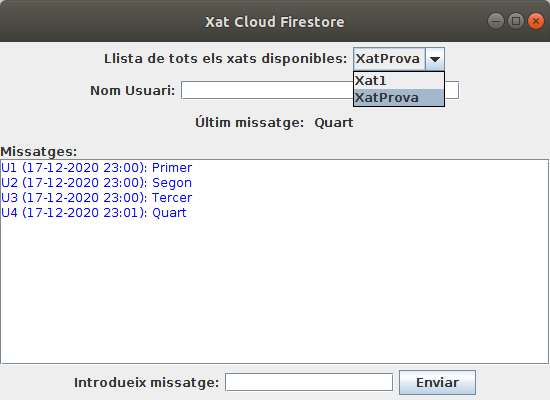

Bases de Dades
4.2.4 CF-IntelliJ: Exemple ampliat
Anem a ampliar l'exemple anterior, fent algunes modificacions i millores:
- Tindrem la classe Missatge amb les propietat nom i contingut (expressament diferents dels noms utilitzats en l'exemple anterior per poder comprovar que aquestes modificacions funcionen i milloren l'exemple). Posarem també la data (com un timestamp de Firebase que es correspon amb un Date de Java i Kotlin) per a poder ordenar els missatges cronològicament
- Llevem les coses que no s'utilitzen estrictament en aquest exemple
- No definirem la referència a la Base de Dades en cada utilització. Únicament una vegada al principi, després de la connexió.
- Posem un JComboBox per a poder triar entre més d'un xat. Per a no modificar les coses ja fetes, posarem la creació dels listeners en un mètode anomenat inicialitzar(), ja que ara els listeners dependran del xat triat. I haurem d'anar amb compte també de parar els listeners, ja creats. És a dir, si primer triem un xat, tindrem els listeners que apunten a ell. Si després triem un altre xat i creem els listeners una altra vegada per a que apunten al lloc correcte, els tindrem per duplicat. Hauríem de parar els primers listeners
Aquesta és la classe Missatge
class Missatge(var nom: String, var data: Date, var contingut: String)Aquest és el programa. Per comoditat hem posat la classe Missatge dins. Si l'heu definida en un fitxer independent, haureu d'esborrar la definició en aquest programa.
No es visualitzaran els missatge que no tinguen la data incorporada.
Guardeu-lo amb el nom Exemple_7_4_2_FirebaseCF_XatCloud_Millorat.kt:
import java.awt.EventQueue
import javax.swing.JFrame
import javax.swing.JLabel
import javax.swing.JTextArea
import javax.swing.JButton
import javax.swing.JTextField
import javax.swing.JPanel
import javax.swing.JComboBox
import java.awt.BorderLayout
import java.awt.FlowLayout
import java.awt.GridLayout
import java.awt.Color
import javax.swing.JScrollPane
import java.io.FileInputStream
import com.google.auth.oauth2.GoogleCredentials
import com.google.cloud.firestore.DocumentReference
import com.google.cloud.firestore.Firestore
import com.google.firebase.FirebaseApp
import com.google.firebase.FirebaseOptions
import com.google.firebase.cloud.FirestoreClient
import com.google.cloud.firestore.ListenerRegistration
import java.text.SimpleDateFormat
import java.util.Date
class Missatge(var nom: String, var data: Date, var contingut: String)
class XatCloudMillorat : JFrame() {
val etComboXats = JLabel("Llista de tots els xats disponibles:")
val comboXats = JComboBox<String>()
val etUsuari = JLabel("Nom Usuari:")
val usuari = JTextField(25)
val etUltimMissatge = JLabel("Últim missatge: ")
val ultimMissatge = JLabel()
val etiqueta = JLabel("Missatges:")
val area = JTextArea()
val etIntroduccioMissatge = JLabel("Introdueix missatge:")
val enviar = JButton("Enviar")
val missatge = JTextField(15)
var database: Firestore? = null
var docRef: DocumentReference? = null
var listenerUltimMissatge: ListenerRegistration? = null
var listenerMissatges: ListenerRegistration? = null
// en iniciar posem un contenidor per als elements anteriors
init {
defaultCloseOperation = JFrame.EXIT_ON_CLOSE
setBounds(100, 100, 550, 400)
setLayout(BorderLayout())
// contenidor per als elements
//Hi haurà títol. Panell de dalt: últim missatge. Panell de baix: per a introduir missatge. Panell central: tot el xat
val panell10 = JPanel(FlowLayout())
panell10.add(etComboXats)
panell10.add(comboXats)
val panell11 = JPanel(FlowLayout())
panell11.add(etUsuari)
panell11.add(usuari)
val panell12 = JPanel(FlowLayout())
panell12.add(etUltimMissatge)
panell12.add(ultimMissatge)
val panell1 = JPanel(GridLayout(3, 1))
panell1.add(panell10)
panell1.add(panell11)
panell1.add(panell12)
getContentPane().add(panell1, BorderLayout.NORTH)
val panell2 = JPanel(BorderLayout())
panell2.add(etiqueta, BorderLayout.NORTH)
area.setForeground(Color.blue)
area.setEditable(false)
val scroll = JScrollPane(area)
panell2.add(scroll, BorderLayout.CENTER)
getContentPane().add(panell2, BorderLayout.CENTER)
val panell3 = JPanel(FlowLayout())
panell3.add(etIntroduccioMissatge)
panell3.add(missatge)
panell3.add(enviar)
getContentPane().add(panell3, BorderLayout.SOUTH)
setVisible(true)
comboXats.addActionListener() { inicialitzarXat() }
enviar.addActionListener { enviar() }
val serviceAccount = FileInputStream("acces-a-dades-6e5a6-firebase-adminsdk-ei7uc-fcf7da56aa.json")
val options = FirebaseOptions.builder()
.setCredentials(GoogleCredentials.fromStream(serviceAccount))
.build()
FirebaseApp.initializeApp(options)
database = FirestoreClient.getFirestore()
// Exemple de llegir tots els documents d'una col·lecció
// Per a triar el xat
val documents = database?.collection("Xats")?.get()?.get()?.getDocuments()
for (document in documents!!) {
comboXats.addItem(document.getId())
}
comboXats.setSelectedIndex(0)
}
fun inicialitzarXat() {
docRef = database?.collection("Xats")?.document(comboXats.getSelectedItem().toString())
area.setText("")
// Exemple de lectura única: senzillament sobre un ApiFuture i sobre ell get()
// Per a posar el títol. Sobre /Xats/XatProva/nomXat
val nomXat = docRef?.get()?.get()?.getString("nomXat")
this.setTitle(nomXat)
// Exemple de listener de lectura contínua addSnapshotListener()
// Per a posar l'últim missatge registrat. Sobre /Xats/XatProva/ultimUsuari i /Xats/XatProva/ultimMissatge
// Si estava en marxa, el parem abans de tornar-lo a llançar
if (listenerUltimMissatge != null)
listenerUltimMissatge!!.remove()
listenerUltimMissatge = docRef?.addSnapshotListener { snapshot, e ->
ultimMissatge.setText(snapshot?.getString("ultimMissatge"))
}
// Exemple de listener de lectura contínua addSnapshotListener() sobre una col·lecció
// Per a posar tota la llista de missatges. Sobre /Xats/XatProva/missatges
// Si estava en marxa, el parem abans de tornar-lo a llançar
if (listenerMissatges != null)
listenerMissatges!!.remove()
listenerMissatges = docRef?.collection("missatges")?.orderBy("data")?.addSnapshotListener { snapshots, e ->
for (dc in snapshots!!.getDocumentChanges()) {
val dData = dc.getDocument().getDate("data")
val d = SimpleDateFormat("dd-MM-yyyy HH:mm").format(dData)
area.append(
dc.getDocument().getString("nom") + " (" + d + "): " + dc.getDocument().getString("contingut") + "\n"
)
}
}
}
// Exemple de guardar dades en Cloud Firestore
// Per a guardar dades. Sobre /Xats/XatProva i després sobre /Xats/Xat1
fun enviar() {
val database = FirestoreClient.getFirestore()
val docXat = database.collection("Xats").document(comboXats.getSelectedItem().toString())
val dades = HashMap<String, Any>()
dades.put("ultimUsuari", usuari.getText())
dades.put("ultimMissatge", missatge.getText())
docXat.update(dades)
val dades2 = HashMap<String, Any>()
dades2.put("nom", usuari.getText())
dades2.put("contingut", missatge.getText())
val m = Missatge(usuari.getText(), Date(), missatge.getText())
docXat.collection("missatges").add(m)
}
}
fun main(args: Array<String>) {
EventQueue.invokeLater {
XatCloudMillorat().isVisible = true
}
}
I aquest és un exemple d'utilització. Es pot veure el JComboBox per a triar els diferents xats

Llicenciat sota la Llicència Creative Commons Reconeixement NoComercial SenseObraDerivada 4.0